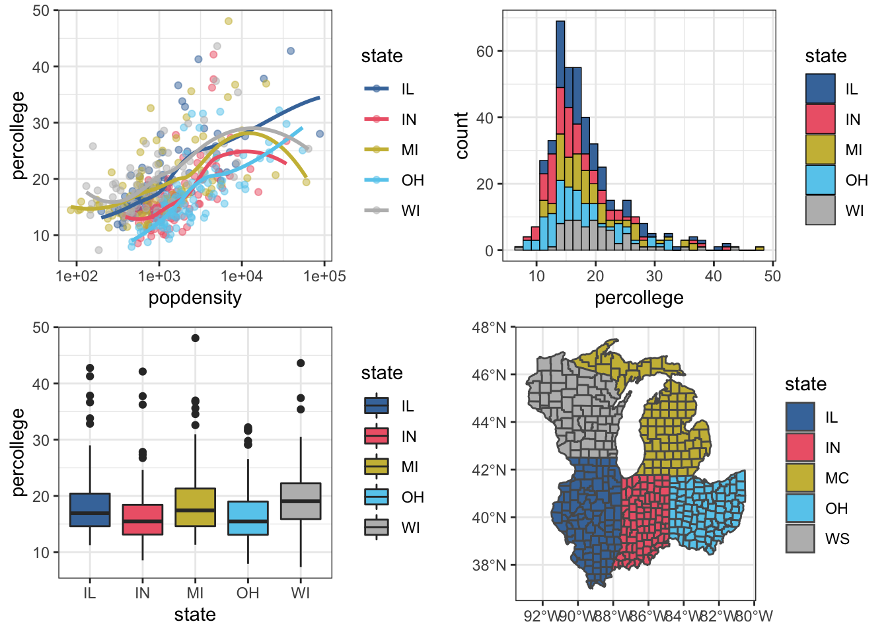
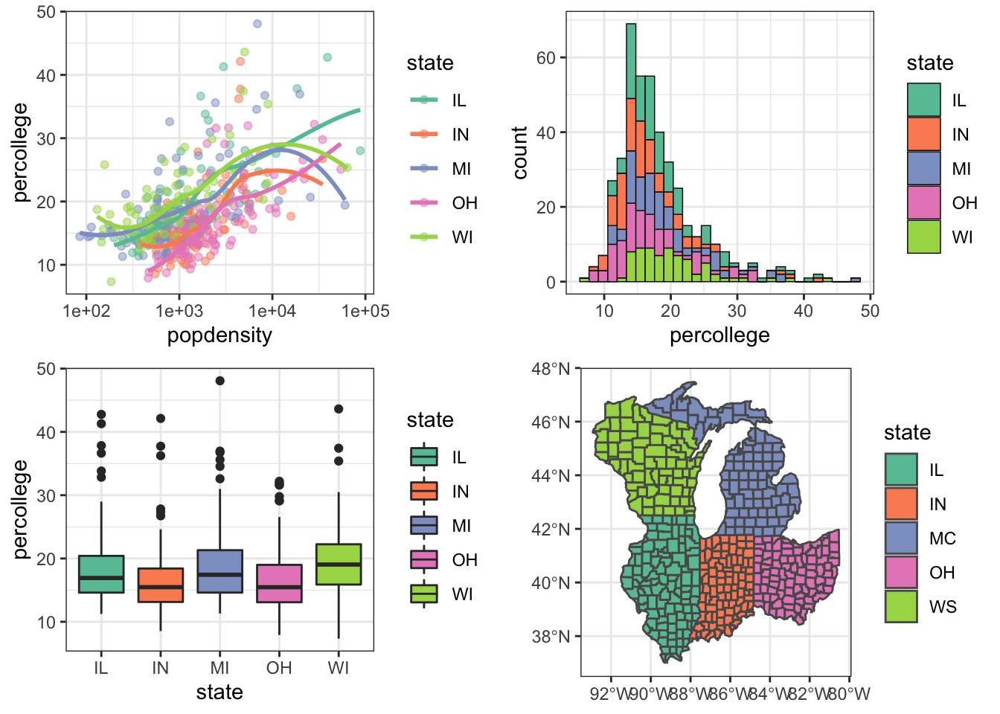
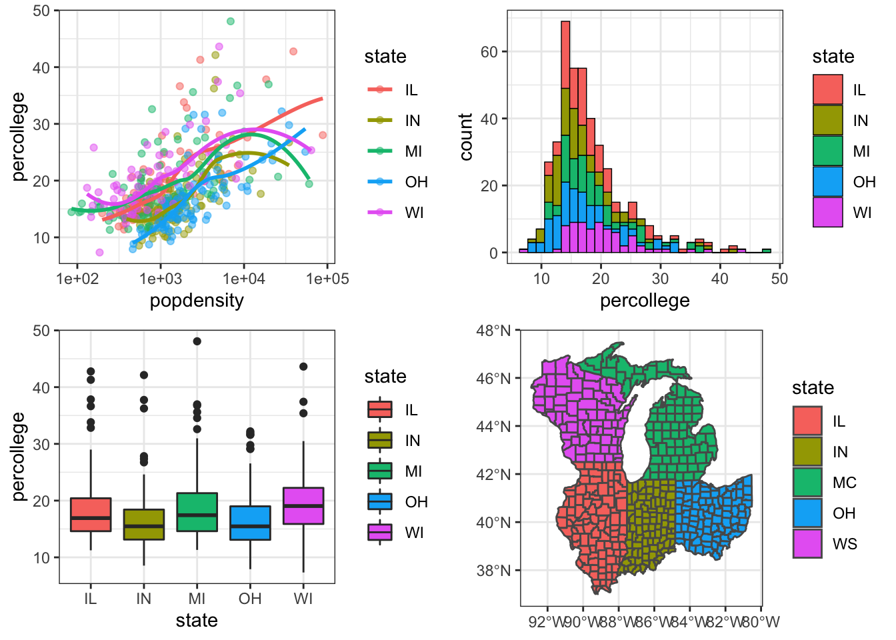

Rのカラーパレットを探していて，良さそうなのを見つけたので，備忘録としてメモ。 パッケージの詳細は，こちらをご覧ください。
library(tidyverse)
library(khroma)ggplotで作図。
p1 <- ggplot(midwest , aes(x = popdensity, y = percollege, color = state)) +
geom_point(alpha = 0.5) +
geom_smooth(method = "loess", se = FALSE) +
theme_bw() + scale_x_log10()
p2 <- ggplot(midwest, aes(x = percollege, fill = state)) +
geom_histogram(color = "black", size = 0.25, bins = 30) +
theme_bw()
p3 <- ggplot(midwest, aes(x = state, y = percollege, fill = state)) +
geom_boxplot() +
theme_bw()
p4 <- states <- sf::st_as_sf(maps::map("county", plot = FALSE, fill = TRUE)) %>%
separate(ID, c("state", "county"), sep = ",") %>%
filter(state %in% c("illinois", "indiana", "michigan", "ohio", "wisconsin")) %>%
mutate(state = str_to_upper(abbreviate(state, 2))) %>%
ggplot() + geom_sf(aes(fill = state)) + theme_bw()khromaのカラーパレットbrightで着色すると，こんな感じ。
p1_khr <- p1 + khroma::scale_color_bright()
p2_khr <- p2 + khroma::scale_fill_bright()
p3_khr <- p3 + khroma::scale_fill_bright()
p4_khr <- p4 + khroma::scale_fill_bright()
gridExtra::grid.arrange(p1_khr, p2_khr, p3_khr, p4_khr, ncol = 2)
よく使う，RColorBrewerのSet2の場合。
p1_brw <- p1 + scale_color_brewer(palette = "Set2")
p2_brw <- p2 + scale_fill_brewer(palette = "Set2")
p3_brw <- p3 + scale_fill_brewer(palette = "Set2")
p4_brw <- p4 + scale_fill_brewer(palette = "Set2")
gridExtra::grid.arrange(p1_brw, p2_brw, p3_brw, p4_brw, ncol = 2)
ちなみに，デフォルトだとこんな感じ。
gridExtra::grid.arrange(p1, p2, p3, p4, ncol = 2)